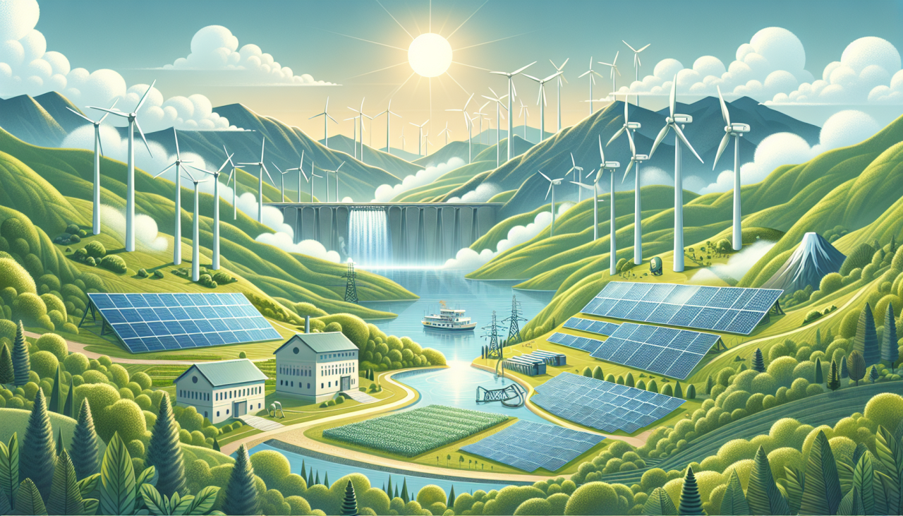

Practical Methods to Minimize Your Carbon Footprint: Lifestyle Changes That Help Reduce Carbon Emissions 👣
- by Deborah Susan Williams , Youth Climate Activist,
Climate Action Network (CAN)
 Reducing our carbon footprint is more important than ever, in the context of climate change. Every decision we make, including what we eat and how we get about, adds to the greenhouse gas emissions that are warming the earth. The good news is that everyone can contribute to lowering their carbon footprint by making a number of easy lifestyle changes. Here are a few approaches to begin with.
Reducing our carbon footprint is more important than ever, in the context of climate change. Every decision we make, including what we eat and how we get about, adds to the greenhouse gas emissions that are warming the earth. The good news is that everyone can contribute to lowering their carbon footprint by making a number of easy lifestyle changes. Here are a few approaches to begin with.
1. Opt for Energy-Efficient Appliances 💡
One of the main causes of carbon emissions is household energy use. Selecting energy-efficient appliances is one of the best methods for lowering your carbon impact. When buying new products, look for the ENERGY STAR label, which certifies that the item satisfies strict energy efficiency requirements. Plus, switching to LED light bulbs will lower your electricity costs and save energy.
2. Embrace Sustainable Transportation 🚗
One of the leading causes of carbon emissions is transportation, particularly from cars. If you can, try biking, walking, or taking public transportation to reduce your carbon footprint. If you drive, consider carpooling or getting an electric or fuel-efficient automobile. Minimizing air travel is also essential; instead of flying for business, consider video conferencing, and when planning a holiday, think about going somewhere local.
3. Encourage the use of Renewable Energy ☀️
Switching to sustainable energy is one of the most effective strategies for lowering carbon emissions. Choose a green energy plan from your utility company if at all possible, or think about adding solar panels to your house. Even if you are unable to completely convert, you may encourage the move away from fossil fuels by supporting policies and businesses that make investments in renewable energy.

4. Reduce Water Consumption 💧
Water conservation can also help you reduce your carbon footprint because water treatment and heating use a lot of energy. Simple adjustments such as utilizing a water-efficient showerhead, repairing leaks, and taking shorter showers can have a significant impact. Additionally, consider collecting rainwater for outdoor use .
5. Practice Conscious Consumerism 🛍
Every product we buy has a carbon footprint, from production to transportation to disposal. By being mindful of what you purchase, you can reduce your impact. Choose products made from sustainable materials, buy locally to reduce transportation emissions, and support companies that prioritize environmental responsibility. Buying second-hand or upcycled goods is another great way to minimize your carbon footprint.
Conclusion
Reducing your carbon footprint doesn't require big changes to your lifestyle - small, everyday things can make a big difference. By adopting some of these practical strategies, you can help fight climate change and contribute to a better planet for future generations. Share what you've learned about reducing carbon emissions with friends and family and encourage them to adopt more sustainable practices. In addition, advocate for policies and leadership that focus on climate change and participate in local or global environmental initiatives. Remember that every step is important and the more we work together, the more impact we can make.